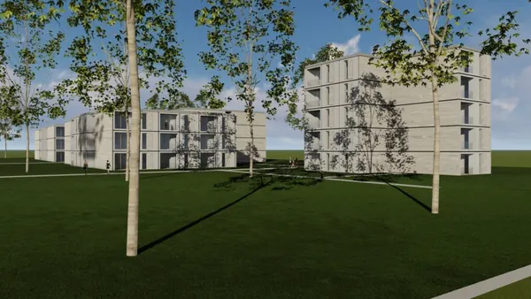
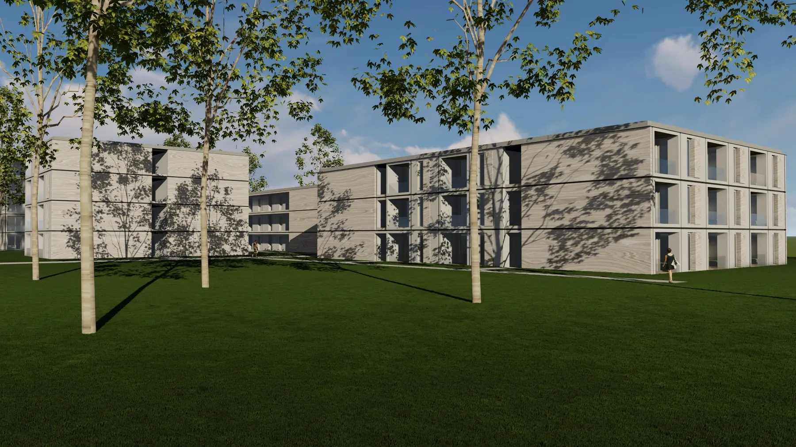

Stellen Sie sich vor, Ihr Bauprojekt wird schneller, flexibler und nachhaltiger realisiert – genau das …
Wie modulares Bauen die Architektur revolutioniert
Was Modulbau kann
Modular bauen – Ohne Eigenkapital
Modulares Bauen ist für uns kein Trend. Es ist die logische Konsequenz einer überregulierten, überteuerten, übernormierten und überforderten Branche.
Wir stellen die richtigen Fragen:
Wie schafft Architektur Wohnraum, den sich Menschen leisten können? Wie bauen wir schneller, ohne Qualität zu opfern? Wie bleibt Architektur trotzdem individuell, hochwertig und zukunftsfähig
Unsere Antwort: Modulare Systeme – nicht von der Stange, sondern mit architektonischem Anspruch. In wenigen Monaten realisiert – nicht in Jahren. Ob „Windmühle“, „Schnecke“, „Town House“ oder „Drive In“: Unsere Gebäude sind flexibel, effizient und schön – weil sie es sein müssen. Wir bauen nicht schneller, um schneller zu bauen – sondern um mehr möglich zu machen!
Sie wollen mehr über modulares Bauen wissen? Hier erfahren Sie mehr!
Modulares Bauen: Nachhaltige Lösungen für den Wohnungsmarkt
Der Wohnungsmarkt in Deutschland steht vor großen Herausforderungen:
Wohnraummangel, steigende Baukosten und ein Fachkräftemangel erschweren die Schaffung neuer Wohnungen – besonders in Städten und prosperierenden Regionen. Prognosen zeigen, dass bis 2025 rund 750.000 Wohnungen fehlen werden. Modulares Bauen bietet eine innovative und nachhaltige Lösung.
Die Vorteile des modularen Bauens
Was den Modulbau so besonders macht
Bauen ist oft teuer und zeitintensiv – Verzögerungen gehören fast zum Standard. Doch mit der Modulbauweise gibt es eine Lösung, die Bauzeiten verkürzt und zahlreiche Vorteile bietet.
Die Idee des modularen Bauens ist nicht neu: Schon die Ägypter nutzten vorgefertigte Steinblöcke für ihre Pyramiden. Im 12. Jahrhundert entstanden in Japan erste Fertighäuser aus Holz, und Leonardo da Vinci entwarf mit der „Casa Mutabile“ ein frühes modulares Wohnkonzept. Später folgten Ikonen wie der Nagakin Capsule Tower in Tokio oder die Plattenbauten der 1970er in Deutschland.
Heute ist die Modulbauweise moderner denn je – effizient, nachhaltig und voller Innovationspotenzial.
Unsere Partner
Unsere aktuellen Partner im Modularbau
Hinter jedem erfolgreichen Bauprojekt steht ein starkes Netzwerk aus erfahrenen Partnern. Wir setzen auf enge Zusammenarbeit mit Experten aus den Bereichen Architektur, Planung und Bauausführung, die alle eines gemeinsam haben: die Leidenschaft für Qualität und Innovation. Gemeinsam mit unseren Partnern entwickeln wir maßgeschneiderte Lösungen, die Ihren höchsten Ansprüchen gerecht werden.
Lernen Sie unsere Partner TM Ausbau und Lechner Group kennen und erfahren Sie, wie wir gemeinsam Ihr Projekt zum Erfolg führen.
Intelligente Partnerschaft für nachhaltiges Bauen: Brückner Architekten, Leipfinger-Bader und Property Max
Steigende Anforderungen an Klimaschutz, Effizienz und gesetzliche Rahmenbedingungen verlangen nach innovativen Lösungen im Bauwesen. In einer zukunftsweisenden Zusammenarbeit bündeln Brückner Architekten, Leipfinger-Bader und Property Max ihre Stärken: klimagerechtes Bauen, digitale Intelligenz und modular gedachte Planung.
Durch den Einsatz von emissionsneutralen Baustoffen, KI-gestützten Planungsprozessen und einem energieeffizienten Modulbaukonzept entsteht eine neue Form des ressourcenschonenden Bauens – wirtschaftlich, anpassungsfähig und zukunftsfähig.
Diese interdisziplinäre Kooperation reagiert gezielt auf die gestiegenen Erwartungen von Investoren und Bauherr:innen. Sie zeigt beispielhaft, wie moderne Architektur, digitale Tools und nachhaltige Bauprodukte die Herausforderungen unserer Zeit in echte Potenziale verwandeln können.
Modulares Bauen neu gedacht – Die Partnerschaft von Lechner Group & Brückner Architekten
Modulares Bauen erfordert modulares Denken – mit der Lechner Group haben wir einen starken Partner an unserer Seite, der mit innovativen Holzmodulbau-Lösungen Maßstäbe setzt. Die nachhaltigen und hochpräzise gefertigten Module ermöglichen eine schnelle, wirtschaftliche und ressourcenschonende Umsetzung anspruchsvoller Bauprojekte.
Als Generalplaner begleiten wir die Projekte von der ersten Idee bis zur Fertigstellung. In enger Zusammenarbeit mit der Lechner Group haben wir bereits zahlreiche modulare Bauprojekte erfolgreich realisiert.
Durch diese Partnerschaften entsteht eine einzigartige Symbiose aus durchdachter Planung, nachhaltiger Fertigung und effizienter Umsetzung – für innovative Architektur mit Mehrwert.
Brückner Architekten + Kleusberg Gmbh
Mit der KLEUSBERG GmbH & Co. KG setzen wir auf einen erfahrenen Partner im Bereich des modularen Bauens. Das Unternehmen zählt zu den führenden Anbietern industriell vorgefertigter Raumlösungen in Deutschland und steht für Qualität, Präzision und Innovationskraft im Modulbau.
Brückner Architekten + Zech Facility Management
Als Ausbau- und Betriebspartner bringt ZECH Facility Management wertvolle Kompetenz in technischer Gebäudeausstattung, Ausbaukoordination und nachhaltigem Gebäudemanagement in unsere Projekte ein. Mit dem Standort München ist ZECH FM nah an unseren Bauprojekten und begleitet diese über den gesamten Lebenszyklus hinweg.
Zukunft und KI
Modulares Bauen: Die Zukunft des Wohnens
Mit seinen zahlreichen Vorteilen bietet der modulare Bau eine Antwort auf die drängenden Probleme des deutschen Wohnungsmarkts:
Bezahlbarer Wohnraum: Kostenersparnisse entlasten sowohl Bauherren als auch öffentliche Subventionen. Schnellere Realisierung: Ambitionierte Wohnbauziele werden greifbarer. Nachhaltige Entwicklung: Modulares Bauen vereint Effizienz und Umweltschutz. Fazit: Modulares Bauen ist nicht nur eine Lösung für die heutige Wohnraumkrise, sondern auch ein Schritt in Richtung einer nachhaltigen und zukunftsorientierten Stadtentwicklung
Modulares Bauen: Die Zukunft der Architektur – Effizient, Nachhaltig, Partnerschaftlich
Sie möchten Ihre Immobilie erweitern oder zusätzlichen Raum für Ihr Unternehmen schaffen? Brückner Architekten begleitet Sie von der Planung bis zur Umsetzung – effizient, flexibel und nachhaltig.
Die modulare Bauweise verkürzt Bauzeiten erheblich und ermöglicht maßgeschneiderte Erweiterungen. Dank der Vorfertigung erfolgt die Montage schnell, sauber und wetterunabhängig – für funktionale und ästhetisch ansprechende Gebäude. Ob Stahl-, Holz- oder Hybridbauweise, wir entwickeln die ideale Lösung für Ihre Bedürfnisse.
Mit unserem „Alles-aus-einer-Hand“-Ansatz bieten wir eine wirtschaftliche, ressourcenschonende und anpassungsfähige Bauweise, die Nachhaltigkeit und Effizienz vereint.
Modulares Bauen ist nicht nur schneller und flexibler, es ist die Zukunft!
Durch Vorfertigung und smarte Baukastenprinzipien schaffen wir Qualität, Effizienz und Nachhaltigkeit. Besonders spannend: Wir machen aus innovativen Ideen neue Standards – für den Wohnungsbau und weit darüber hinaus. Gemeinsam revolutionieren wir die Bauindustrie und setzen neue Maßstäbe.
Die Zukunft der Architektur: Modular und nachhaltig
Modulares Bauen trifft den Zeitgeist: Kosten und Qualität sind präzise planbar, Prozesse optimiert und ressourcenschonend. Ob Einfamilienhaus oder öffentliche Einrichtung – das Konzept bietet enormes Potenzial für die Zukunft der Architektur.
Nachhaltigkeit und smartes Wohnen treiben den Wandel voran. Modular gefertigte Gebäude minimieren Abfall, ermöglichen Recycling und sparen Rohstoffe. Einzelne Module lassen sich leicht austauschen, wiederverwenden oder recyceln, was Energieverbrauch und Kosten senkt.
Diese Bauweise verbindet Effizienz mit Umweltbewusstsein und setzt neue Maßstäbe in der Architektur.

Neuer Raum, neue Visionen!
Welche Rolle spielt KI beim Modularen bauen?
Robotik und Künstliche Intelligenz (KI) spielen eine zentrale Rolle im Modulbau, indem sie die Automatisierung von Produktionsprozessen vorantreiben und die Präzision bei der Herstellung von Bauteilen erhöhen. Die PropertyMax GmbH setzt modernste KI-Technologien ein, um umfangreiche Daten zu analysieren und die besten Bebauungsvarianten für Grundstücke zu ermitteln. Dies ermöglicht nicht nur effizientere Bauabläufe, sondern steigert auch den Wert der Immobilien.
Die PropertyMax GmbH kombiniert das Know-how erfahrener Architekten mit den Möglichkeiten fortschrittlicher Algorithmen, um optimale Ergebnisse zu erzielen und den Planungsprozess für ihre Kunden zu optimieren.
Für wen, und warum wir
Warum Modulares Bauen mit uns?
„Modulares Bauen ermöglicht flexibles, effizientes und nachhaltiges Bauen, da vorgefertigte Module in kurzer Zeit vor Ort montiert werden können und sich leicht an veränderte Anforderungen anpassen lassen.“
Peter Röllgen, COO Corporate Group
Für wen ist Modulares Bauen geeignet?
Warum Brückner Architekten für Ihr modulares Bauprojekt?
Bei Brückner Architekten stehen Ihre Wünsche im Mittelpunkt. Mit unserer Erfahrung im modularen Bauen und kreativer Energie gestalten wir jedes Projekt einzigartig – funktional, ästhetisch und nachhaltig.
Wir verbinden Innovation mit bewährten Techniken, um maßgeschneiderte Lösungen zu entwickeln. Dank unserer Expertise setzen wir Projekte effizient, flexibel und ressourcenschonend um – ohne Kompromisse bei Qualität oder Design.
Mit einem starken Fokus auf Nachhaltigkeit und modernster 3D-BIM-Technologie sind wir Ihr idealer Partner für zukunftsweisende Architektur.
Lassen Sie uns über Ihr Projekt sprechen! Wir freuen uns darauf, Ihre Visionen und Ideen kennenzulernen und gemeinsam ein maßgeschneidertes Konzept zu entwickeln.
Wenn Sie mehr über Modulares Bauen erfahren oder ein Projekt mit uns realisieren möchten, zögern Sie nicht, uns zu kontaktieren. Wir stehen Ihnen gerne für eine unverbindliche Beratung zur Verfügung und unterstützen Sie dabei, Ihre Ideen in die Tat umzusetzen.
Modulares Bauen München, Modulares Bauen Deutschland, Modulares Bauen Architekt, Modulare Bauten, Was ist Modulbau, Modular Bauen, Modulares Gebäude, Modulbau Anbieter, Modulbau München, Modulbau Deutschland , Holzmodulbau, Modulare Bauweise, Modulares Bauen Stahl, modul bauen, Modulares Bauen Stahl
Wir haben IhrInteresse geweckt?
Sie haben Fragen oder wollen einen Termin vereinbaren?